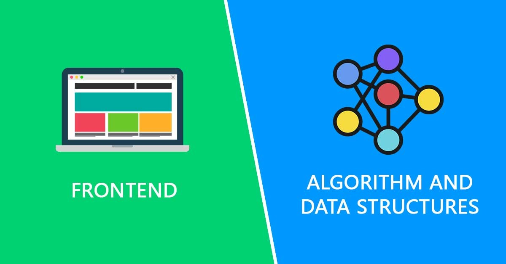

Data structures and algorithms (basic)
I started learning to code when I was 12 years old because I wanted to make my own video games. Over time, I have gained a wealth of experience designing and developing mobile and web applications.

Intermediate html and css
I started learning to code when I was 12 years old because I wanted to make my own video games. Over time, I have gained a wealth of experience designing and developing mobile and web applications.